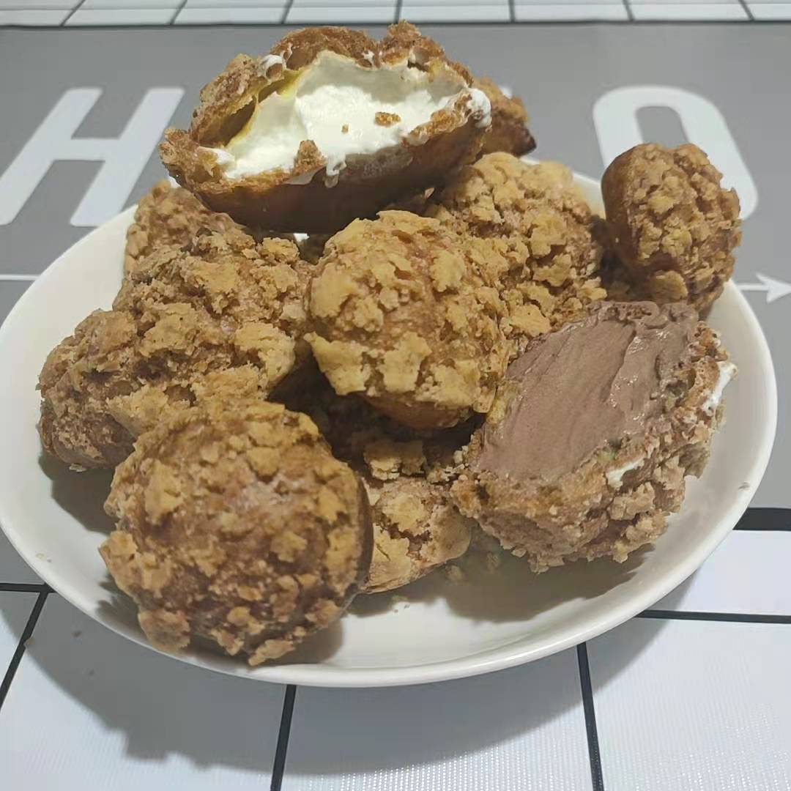
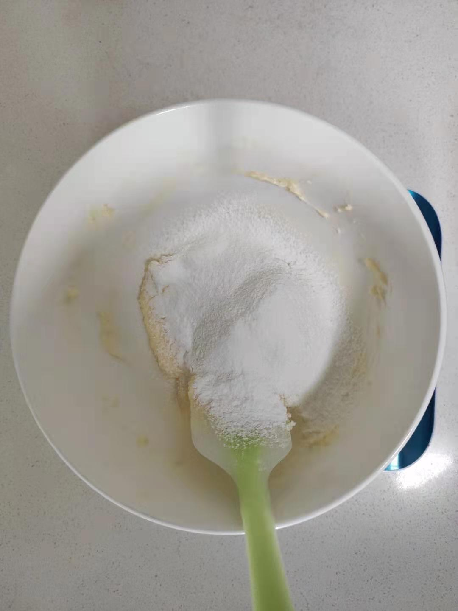
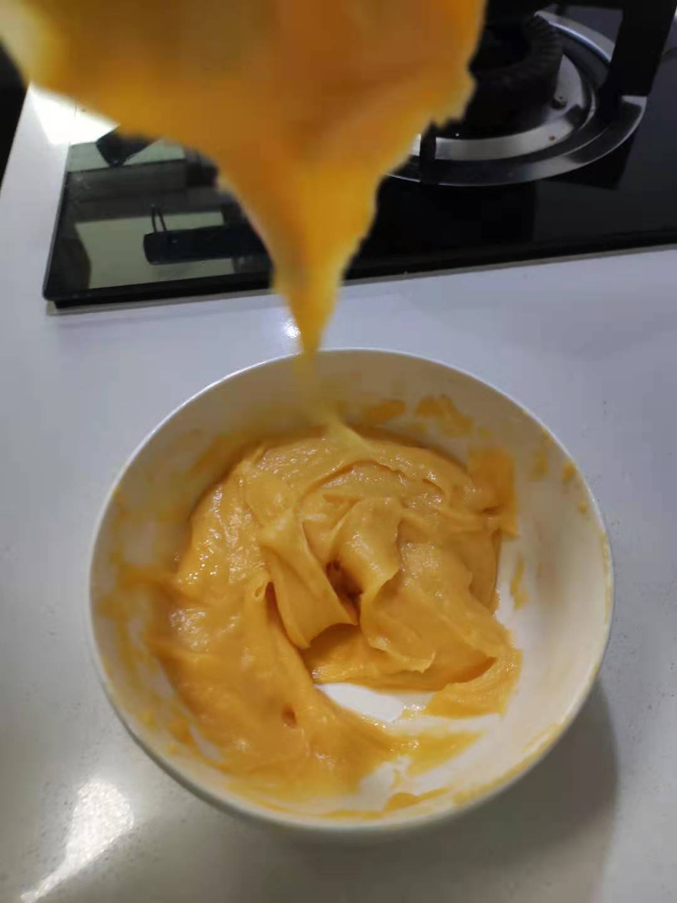
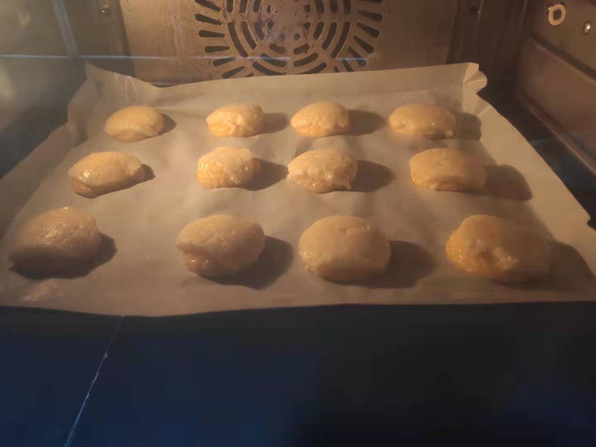
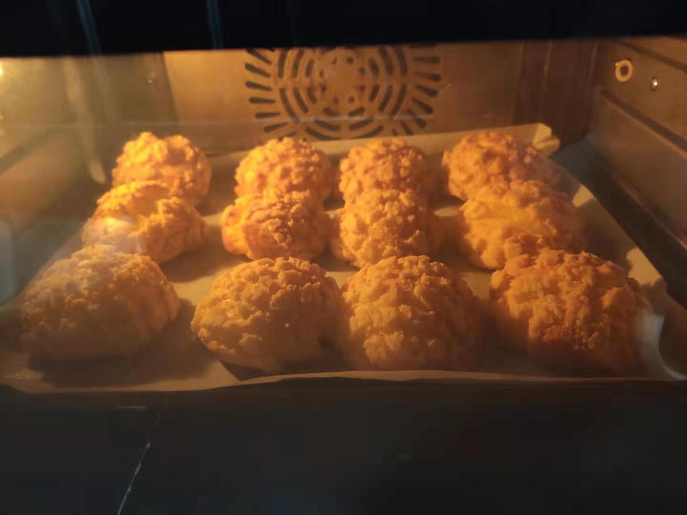
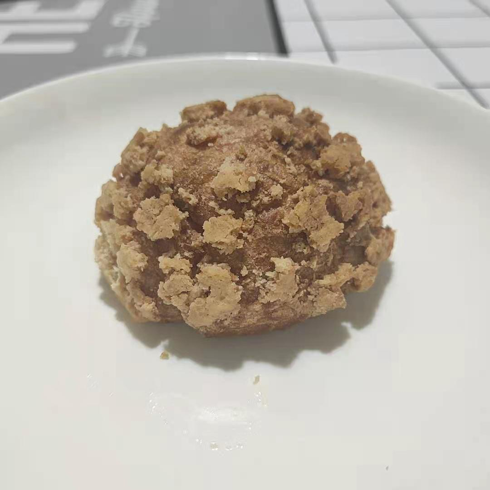

关于这道菜
是 Miu 老师心心念念的泡芙呢！

又断更了好久，因为 Miu 老师久久不肯写稿，所以这次更换了大厨 >。<
食材清单
| 材料 | 说明 | 用量 |
|---|---|---|
| 黄油 | 一半用来做酥皮，一半用来做泡芙 | 80g |
| 糖 | 大部分都是给酥皮，留一点点给泡芙 | 30g |
| 低筋面粉 | 也是一半用来做酥皮，一半用来做泡芙 | 100g |
| 牛奶 | 全是给泡芙用的 | 85g |
| 鸡蛋 | 全是给泡芙用的，这里 3 个只是个估计量，最终用多少是看面糊状态决定的 | 3个 |
| 淡奶油 | 内馅也可以用卡仕达酱 | 250ml |
| 香草精 | 因为买不起香草荚用了香草精代替 | 几滴 |
| 可可粉 | 可可味的内馅 | 适量 |
步骤总结
- 做酥皮
- 做泡芙
- 融合泡芙和酥皮
- 烤
- 做内馅
- 灌内馅
步骤详解
先做酥皮。
软化过的黄油和糖充分混合后筛入低筋面粉，疯狂搅拌成一团，整理成直径 4cm 的一团圆柱体塞进冰箱冷冻。
这里忘记拍照了，所以放了一张搅到一半的图。

然后开始做泡芙。
黄油、牛奶、糖一股脑倒进锅里，中火加热到开始咕嘟咕嘟后转小火。
关火后迅速筛入低筋面粉混合均匀，再开小火继续疯狂搅拌，直到全都变成一团，看不到生面粉为止。
晾凉之后开始不停加蛋液、搅拌，第一次可以加一个鸡蛋的量，搅拌到蛋液被完全吸收后，继续每次加一点点蛋液，疯狂搅拌，再加。
不停反复，直到可以用刮刀挑起后挂起倒三角就可以啦。

装进裱花袋，往油纸上挤出直径大约 3cm 的小山包，尽量均匀等大，两个之间留够足够的间隙，泡芙在烤的过程中会大幅膨胀。
这时候把酥皮取出来，切成 2mm 厚的小片盖在泡芙上面，尽量放平。
这里又忘记拍照了！想起来的时候他们已经进烤箱了。

丢进 180 度的烤箱先烤 15 分钟给泡芙定型，调低一些温度（可能是 170 度）继续烤十几分钟。

第一次烤的时候最好 找Miu老师 盯着烤箱，万一要烤糊了就调低一些温度，泡芙要是塌了就再调高一些温度。
烤完之后就可以做内馅了，可以直接打发淡奶油到提起来之后可以有稳定的小尖角，再滴几滴香草精就搞定。
当然也可以做一份卡仕达酱，或者混入一些别的粉来调不同的味道。
烤完焖 5 分钟就可以把泡芙取出来了。
把内馅装入裱花袋，在泡芙底部戳个小洞往里面用力挤，直到挤不进去，泡芙就做好叻。

技术总结
- 做酥皮的时候最好不用砂糖而是糖粉，不然颗粒感会比较强。
- 加蛋液的时候需要把面糊先放凉，不然容易会变成蛋花汤。
- 加蛋液要慢慢加，如果加多了吸收不了可能会比较奇怪。
- 酥皮不要切太厚，不然烤出来的成品可能会爆炸头或者塌掉。
- 各家的烤箱脾气不同，温度可能需要适应一下，但有一点不变的是烤的过程中不能打开烤箱。